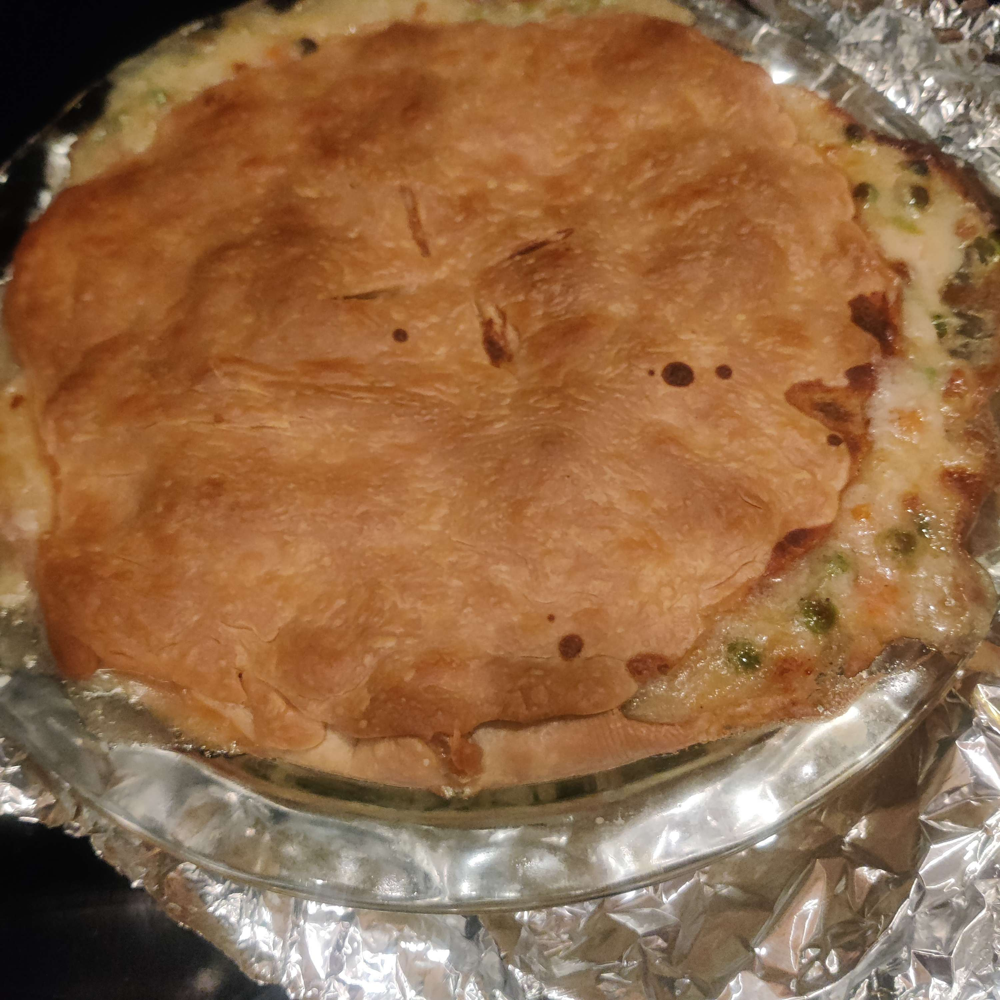

Chicken Pot Pie is one of my all time favorite meals to have but for a long time I never knew how to make one myself. I would only be able to have it when I went out to a restaurant or diner that served it. Recently however I have been trying to work on cooking at home more often so I figured I would give it a try!
Ingredients
1/2 Cup Butter
1/2 Cup Flour
2 Cups Chopped Chicken
1 Bag of Frozen Vegetables
16 fl oz Chicken Broth
Two Premade Frozen Pie Crusts
Salt
Black Pepper
Directions
Step One
Preheat the oven at 425℉ and keep pie crust at room temperature to soften.
Step Two
In a large pot on medium-low heat, add butter and flour. Stir constantly to form the roux. After about 10 minutes, add broth, milk, salt and pepper while continuing to stir. Once the mixture has started to thicken add in the frozen vegetables and chopped chicken and allow 10 minutes of time of additional cooking on low heat.
Step Three
Drape the first pie crust over a 9 inch diameter pie dish. Ladle as much chicken and vegetable mixture into the pie dish that can reasonably fit. Drape the second pie crust over the mixture to cover the entire pie and cut multiple slits into the top of the pie crust.
Step Four
Bake pie in the oven for about 30 to 45 minutes.
Results
This is how my first attempt at making chicken pot pie went. I think overall making the pie did not turn out to be as difficult as I initially expected. I will definitely be making this more in the future especially when I have a lot of people to feed. I hope if you are interested that you give it a try as well!
